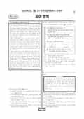

문제지


시험지를 먼저 풀어 보세요. 등급컷·표준점수·난이도는 흐리게 가려 뒀어요.
| 등급 | 원점수 | 표준점수 | 백분위 |
|---|---|---|---|
| 1 | 75 | 134 | 95 |
| 2 | 68 | 126 | 89 |
| 3 | 60 | 116 | 76 |
| 4 | 51 | 106 | 60 |
| 5 | 40 | 94 | 39 |
| 6 | 30 | 83 | 22 |
| 7 | 23 | 74 | 11 |
| 8 | 18 | 68 | 3 |
등급별 컷 · 입시기관 3곳 원점수 추정 종합(이투스·종로학원·대성마이맥) · 공통+선택 점수 조합에 따라 다를 수 있음 · 만점 100점
| 등급 | 표준점수 이상 | 인원(명) | 비율 |
|---|---|---|---|
| 1 | 134 | 15,538 | 4.67% |
| 2 | 126 | 22,064 | 6.63% |
| 3 | 116 | 42,739 | 12.84% |
| 4 | 106 | 54,612 | 16.41% |
| 5 | 94 | 67,462 | 20.27% |
| 6 | 83 | 56,828 | 17.08% |
| 7 | 74 | 38,232 | 11.49% |
| 8 | 68 | 23,752 | 7.14% |
| 9 | 47 | 11,573 | 3.48% |
국어 영역 전체 응시자 기준이에요.
출처: 시·도교육청이 공개한 전국연합학력평가 성적 분석·통계자료(공개 자료 보기).
발행 기관: 시·도교육청(전국연합학력평가). 파일 위치: 이 사이트가 보관한 사본. 저작권은 발행 기관에 있습니다. 원본과 다르거나 게시 중단이 필요하면 연락처로 알려 주세요. 등급컷 출처 구분은 데이터 원칙에서 설명합니다.
막대 색은 역대 대비 난이도 · 진한 막대가 이 시험 · 막대를 누르면 그 회차로 이동
| 회차 | 1등급컷 | 표점 최고 | 1등급 표점 | 난이도 |
|---|---|---|---|---|
| 3월 학평2026년 고3이 시험 | 75 | 161 | 134 | 매우 어려움 |
| 10월 학평2025년 고3 | 88 | 142 | 131 | 보통 |
| 7월 학평2025년 고3 | 90 | 139 | 131 | 보통 |
| 5월 학평2025년 고3 | 95 | 134 | 130 | 매우 쉬움 |
| 3월 학평2025년 고3 | 78 | 159 | 136 | 매우 어려움 |
| 10월 학평2024년 고3 | 94 | 134 | 129 | 쉬움 |
| 7월 학평2024년 고3 | 94 | 135 | 130 | 쉬움 |
| 5월 학평2024년 고3 | 93 | 135 | 129 | 매우 쉬움 |
| 3월 학평2024년 고3 | 83 | 150 | 133 | 어려움 |
| 10월 학평2023년 고3 | 97 | 128 | 126 | 매우 쉬움 |